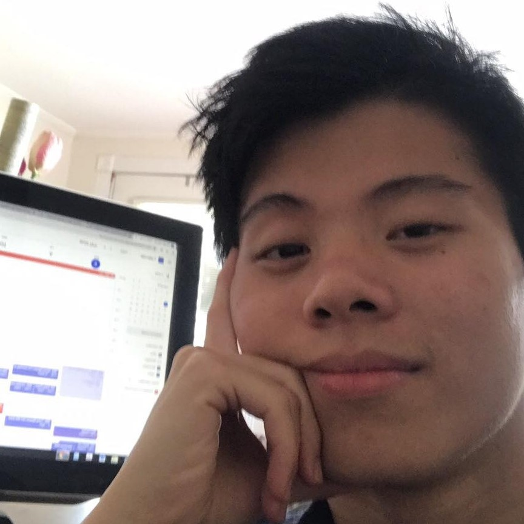
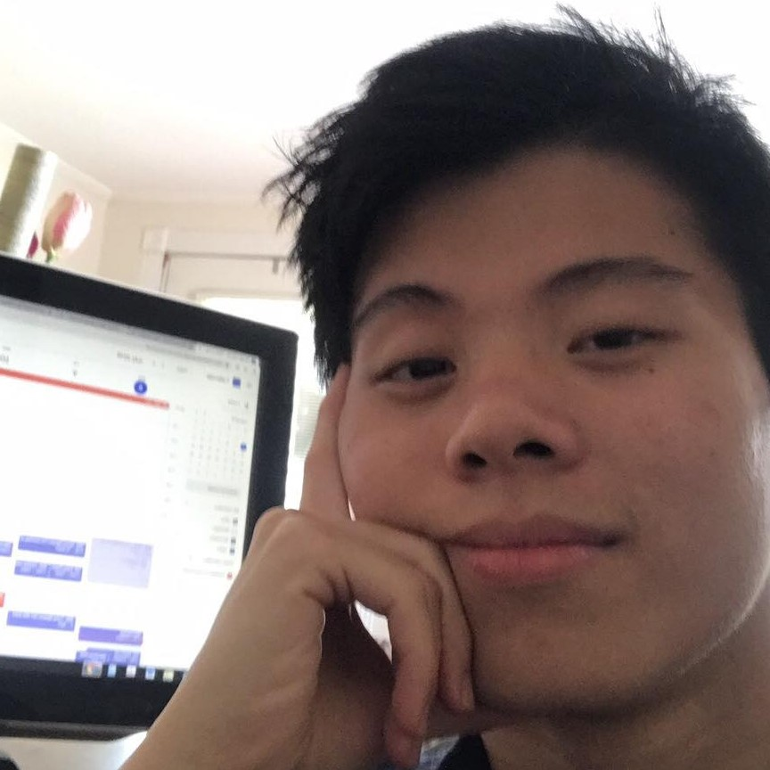
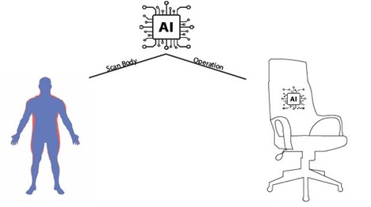

Team Profile
 


Personality in ideal job:
-The ideal jobs of our team member are very different from each other and have no similarity aside from all of them involve programming. In specific Nghi wish to be a security engineer, Dong wants to be an AI engineer, Dat want to be a front-end developer and Quan’s ideal job is a back-end developer in the form of a java programmer. There are both pros and cons with our team difference in goals. The cons are that we will have a harder time discussing more specialize topic because our specialty is so different from one another and it will be harder to give feedback or support on a member’s job because of this difference. The pros however outweigh the cons, the difference in experience means that we can give feedback from different perspective to further our project, and we can also can cover different elements of our project because different sides of a project may require different specialty. Furthermore, working with other from different experience means you can learn more about their jobs and how to work with people with similar jobs in the future. We see this as a good opportunity to learn about the different branches of programming and how people of different specialty can work together to create a joined project.
Tools
-
 Our git
Our git -
 Our website
Our website - Inteview video
List of Tools
IT Works
 The Interview with a professional business analyst
The Interview with a professional business analyst
IT Technologies

.jpg)

Project idea
AI Ergonomic chairFeedback
Pham Vo Dong
This is the first time I have undertaken the leader role in a team that does not avoid mistakes during the operating team. My tasks are web development and project management, in which I finish all my tasks on time. However, I do not have any experience in web designing, so this web is not as expected as I want. I do not do well. That is not the management team's time best. Because members do not assign their tasks on time, my leadership skill is not good enough. In the next assignment, I will cultivate my leadership skills and knowledge to achieve the goal in the next project and future.
About Quan, he is responsible for doing his task and reaching all requirements finishing on time. His knowledge in IT technology is good; however, he needs to do some research and reflect on making his work more complex and attractive to people. Coming up with Nghi, his section stratified the goal, but it was not as fast as the speed I expected. Finally, Dat is the slowest person because his computer was attacked by a virus that is not good. However, his work meets all the requirements, and his interview video is good, which gives all the information for people to know about the IT world.
Overall, all members' work meets the requirements and is well done; therefore, in the next assignment, they must improve their speed to finish all the needs on time, making the project go on the path.
Le Anh Quan
Quan
I think this course I got lucky and got a great team. I am never late to the team meeting, not afraid to speak my opinion and always ready for the job. I have a great team this time so there weren’t many conflicts, and we did our part on time and with high quality. Because of that I haven’t seen many flaws in my teammates. I would like to help them improve on their shortcoming when I see them, and I think I might see more of them as we work on the 3rd assignment.
Dong
A good teammate got his work done on time and gave good ideas for the project. Always present at the meeting and contribute a quite to the website too. Usually, the one who start the meeting and assign the jobs. Nothing bad to talk about yet.
Nghi
Decent teammate doesn’t miss his deadline and provide quality writing as well. Always present at meeting and contribute a lot on the parts that he was assign with. Nothing bad have been seen while working with him.
Dat
A decent teammate. Doesn’t leave any bad impression yet. While he is a little slow on GitHub once he got the hang of it he submit his work on time. Is on time at meeting and always contribute ideas.
Bui Quang Thanh Dat
Personally, I was really fortunate to be a member of this team with excellent individual. I did all the assigned part and conducted the interview as required. However, I was procrastinated on doing the individual writing and GitHub submission which it was indeed my fault. Therefore, for the last assignment I will push myself harder.
Quan & Nghi
Overall, they did a good job on the assigned part and made contributions as a whole. They always on time for meeting as well as work submission. Nghi also provides insight regarding the interview with an IT professional. Finally, it is the comprehensive writing and the group idea contribution that worth mentioning.
Dong
He is the one that I must give compliment most. He not only leading the team with assigned parts and schedules meeting, interview time but also keeping track of individual work on GitHub. Additionally, he is also received credit on being the most contributor to the group website. He played key role in the group which I was honour to work with.
Mai Chi Nghi
Although we work on a team for a short time, which means I do not know and understand the other experiences and other roles of each other have not yet been revealed. However, I have to give some feedback so that everyone can know what I think about you. First of all, even though I and Dat have to finish our task more later than the two others, when we misunderstand a topic on an assignment or our task, we have to ask, which is very important when we work on a team and we are well done with our tasks. Besides that, Quan is a guy who has stable work in the team and always contributes ideas when we have a discussion. Along with Dong, a person has to divide tasks among everyone in the group in the most reasonable way and motivate everyone to submit works on time on GitHub, which is the job of a well-being team leader. In general, there is all of my thinking about members when I work on the team and I need to improve myself so as not to affect the team by my mistakes like being late in completing the quest.